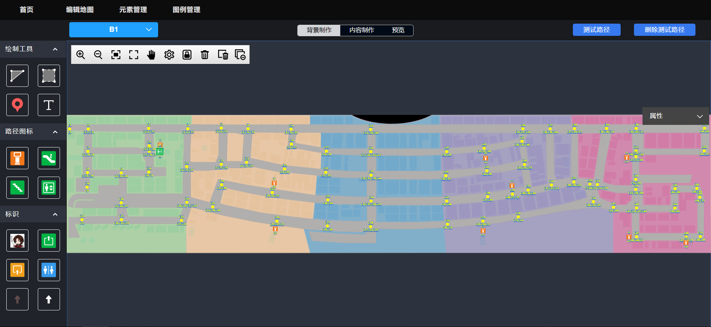
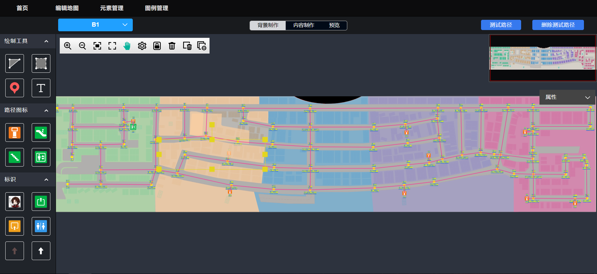
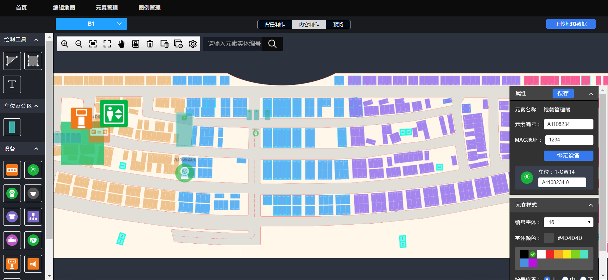

测试路径
上传地图数据
初始化地图数据

功能说明：
（1）原地图编辑器只在内容制作中有保存操作按钮；现需要在背景制作中也增加保存上传数据按钮。
（2）在背景制作中点击保存上传数据，也需要根据原有规则同时检查背景制作和内容制作中的内容是否合法，如同一元素的设备ID不能重复等。
业务说明：
（1）在地图编辑器-背景制作中增加“上传地图数据”和“初始化地图数据”两个按钮，功能对应内容制作中的“增量更新地图数据”和“初始化上传地图数据”两个按钮；
（2）当增量更新功能稳定时，内容制作和背景制作都仅保留“上传地图数据”一个按钮（包含了增量更新和初始化数据功能）。
（3）将原来背景制作中的“测试路径”和“删除测试路径”合并为一个按钮，根据地图路径的显示/隐藏状态来显示按钮，路径隐藏状态时按钮显示为“测试路径”，路径为显示状态时按钮显示为“删除路径”。
测试路径
上传地图数据
删除路径
上传地图数据


删除路径
上传地图数据
初始化地图数据